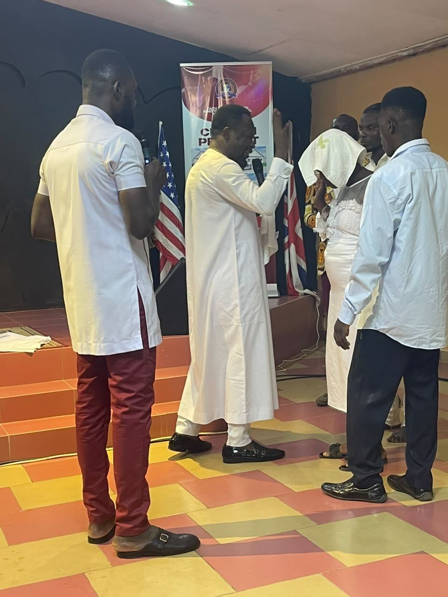

Our mission
- To preach the undiluted Word of God.
- Spiritual growth, numerical growth and financial growth.
- Equipping the saints of Christ (Ephesians 4:11–13).

About us
Faith Demonstration Ministries International is a prophetic and apostolic church in Accra, Ghana, led by Apostle Victor Annan.
Who we are
We gather to worship, to hear the Word of God and to see it at work in everyday lives: in healing, in restoration and in families made whole.
Our name comes from the Apostle Paul's words to the church in Corinth. He did not come with clever words, but with a demonstration of the Spirit's power, so that faith would rest on God and not on people.
Whether you have walked with Jesus for years or you are only beginning to ask questions, there is a seat for you in the house.

Our vision
To raise an indigenous and self‑supporting church.
To demonstrate the love of God in our generation.
What drives us
We focus on the sub-communities around us, the youth and the children, training them with vocational skills.
Christ himself gave the apostles, the prophets, the evangelists, the pastors and teachers, to equip his people for works of service, so that the body of Christ may be built up until we all reach unity in the faith.
What we're about

Spirit-filled praise every service, and all-night worship on special nights.

Practical Bible teaching every Tuesday at Study His Word.

Grace Hour on Wednesdays and the Liberation and Prophetic Hour on Fridays.

Children, young people and parents growing in faith together.
Children and youth
Our children and young people are at the heart of church life, in worship, in celebration and in service.
Alongside the Word, we want to train them, and the communities around us, with vocational skills for life.
See more in the galleryWhy we're called Faith Demonstration
My message and my preaching were not with wise and persuasive words, but with a demonstration of the Spirit's power, so that your faith might not rest on human wisdom, but on God's power.